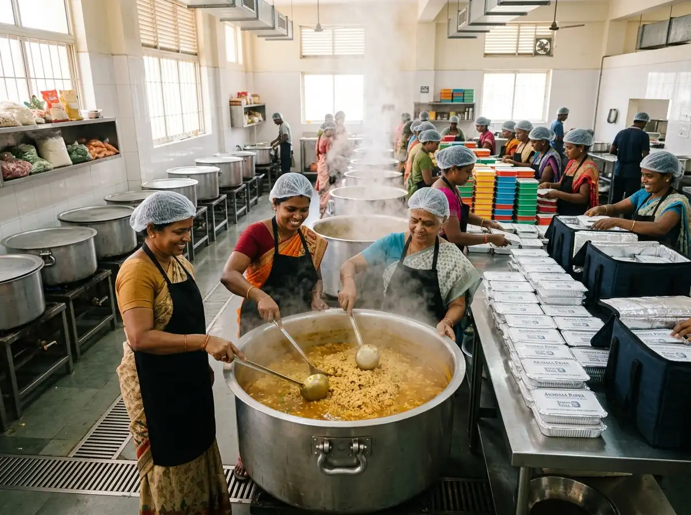
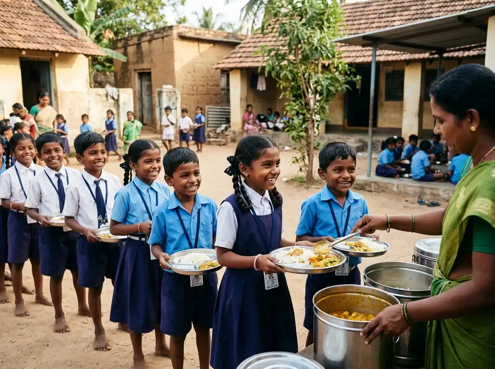

Founded by social innovators, doctors, and grassroots workers in Salem, Stackly was built after witnessing charity funds diluted by middlemen. We created a technology-backed platform where every rupee is tracked to its destination.
From solar borewells in drought-prone wards to daily school meals, our Chinna Thirupathi team conducts physical audits before and after every disbursement.
Milestones achieved through unwavering community trust, rigorous audits, and genuine volunteer dedication.
Cooking and delivering 35,000 warm meals to stranded migrant workers across Salem during the first pandemic lockdown.
Installed 10 solar-powered deep borewells and RO filtration units, giving 4,500+ villagers fluoride-free drinking water.
Salem's first donor verification app — every grocery bag, school kit, and medical bill stamped with GPS coordinates and vendor invoices visible to donors.
Section 80G certified, ₹4.8 Cr+ mobilized across 42 wards — feeding 450 children daily with zero overhead cuts.
Meet the doctors, teachers, and field organizers steering our Chinna Thirupathi coordination desk.
Whether you donate ₹500 or volunteer on Sunday mornings, your contribution creates direct, visible, and audited grassroots impact.